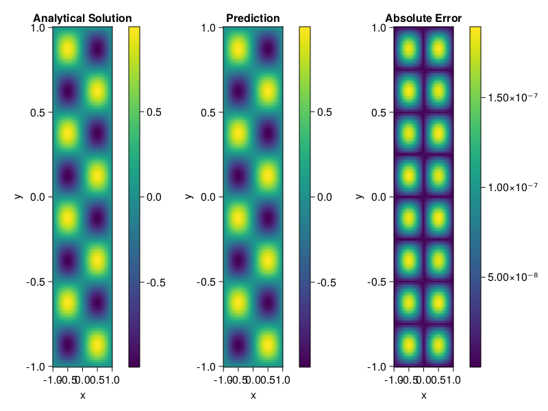

Helmholtz equation
Let us consider the Helmholtz equation in two space dimensions
\[\begin{aligned} &\Delta u(x, y)+k^{2} u(x, y)=q(x, y), \quad(x, y) \in \Omega:=(-1,1)^2 \\ &u(x, y)=0, \quad(x, y) \in \partial \Omega \end{aligned}\]
where
\[q(x, y)=-\left(a_{1} \pi\right)^{2} \sin \left(a_{1} \pi x\right) \sin \left(a_{2} \pi y\right)-\left(a_{2} \pi\right)^{2} \sin \left(a_{1} \pi x\right) \sin \left(a_{2} \pi y\right)+k^{2} \sin \left(a_{1} \pi x\right) \sin \left(a_{2} \pi y\right).\]
The excat solution is $u(x,y)=\sin{a_1\pi x}\sin{a_2\pi y}$. We chose $k=1, a_1 = 1$ and $a_2 = 4$.
using ModelingToolkit, IntervalSets, Sophon, Lux
using Optimization, OptimizationOptimJL
@parameters x,y
@variables u(..)
Dxx = Differential(x)^2
Dyy = Differential(y)^2
a1 = 1
a2 = 4
k = 1
q(x,y) = -(a1*π)^2 * sin(a1*π*x) * sin(a2*π*y) - (a2*π)^2 * sin(a1*π*x) * sin(a2*π*y) + k^2 * sin(a1*π*x) * sin(a2*π*y)
eq = Dxx(u(x,y)) + Dyy(u(x,y)) + k^2 * u(x,y) ~ q(x,y)
domains = [x ∈ Interval(-1,1), y ∈ Interval(-1,1)]
bcs = [u(-1,y) ~ 0, u(1,y) ~ 0, u(x, -1) ~ 0, u(x, 1) ~ 0]
@named helmholtz = PDESystem(eq, bcs, domains, [x,y], [u(x,y)])\[ \begin{align} \frac{\mathrm{d}^{2}}{\mathrm{d}x^{2}} u\left( x, y \right) + \frac{\mathrm{d}^{2}}{\mathrm{d}y^{2}} u\left( x, y \right) + u\left( x, y \right) =& - 166.7832748185191 \sin\left( 3.141592653589793 x \right) \sin\left( 12.566370614359172 y \right) \end{align} \]
Note that the boundary conditions are compatible with periocity, which allows us to apply BACON.
chain = BACON(2, 1, 5, 2; hidden_dims = 32, num_layers=5)
pinn = PINN(chain) # call `gpu` on it if you want to use gpu
sampler = QuasiRandomSampler(300, 100)
strategy = NonAdaptiveTraining()
prob = Sophon.discretize(helmholtz, pinn, sampler, strategy)
@time res = Optimization.solve(prob, BFGS(); maxiters=1000)u: ComponentVector{Float64}(filters = (filter_1 = (bias = [0.8962903377800923; 0.924185087350097; … ; -0.2058245699148631; 0.9314327968736091;;]), filter_2 = (bias = [-1.2134505903702513; -0.0422804117327547; … ; -0.18733426850376733; 0.9449629605299292;;]), filter_3 = (bias = [0.7847950979742093; -0.1187879665282275; … ; 0.29644778144284994; 0.6563253394976485;;]), filter_4 = (bias = [-1.08297290595945; -0.41282653725669105; … ; -0.6127283921647021; 0.39914240155580005;;]), filter_5 = (bias = [-0.5304918359355154; -0.7124403149021606; … ; -0.3448445573709642; 0.20165396421678386;;])), linear_layers = (layer_1 = (weight = [-0.10853710864468824 0.164424488169141 … -0.200046445551167 0.06729105464807371; 0.14787780735642175 0.20742108513890373 … 0.03527972965503503 0.11477884365030323; … ; -0.16417417106229895 -0.14598641234292675 … -0.278380400477711 0.20503766021002337; -0.29112450765947034 -0.25543398738116446 … -0.05798920791221149 -0.2931032947925931], bias = [0.05272367076340978; -0.04949993171719162; … ; 0.004733342997381641; 0.028085229691013812;;]), layer_2 = (weight = [0.11951458580871357 0.08424338378890657 … -0.41810076557684456 -0.3660680122650962; 0.38943652929033157 0.31765162664623164 … 0.2749979277921462 -0.19166997841182712; … ; -0.26579195302139497 -0.7171973615574556 … -0.31224499559634245 -0.25964214780855016; 0.2607638689406333 -0.1872635405594658 … 0.3028861992354029 0.15045301942540282], bias = [-0.028364128301175105; 0.0026777160182410225; … ; 0.0401789949522279; 0.004737659803741703;;]), layer_3 = (weight = [-0.17186968360554508 -0.19472299301585666 … 0.2185038763265915 -0.0400546021841658; 0.024798097188620125 -0.4157099455022086 … -0.20742445257672468 0.11083753773711243; … ; 0.06225820462235897 -0.09643768615044714 … 0.09253064118111289 -0.3664276268497232; -0.020439254980257702 -0.2158933968715371 … -0.036042277252216225 -0.4035204578431572], bias = [0.04587246037214037; -0.0420300337032837; … ; 0.0038018116307312355; -0.013297717160164913;;]), layer_4 = (weight = [0.37178529718933023 -0.22799155523934456 … 0.007741624112392892 -0.08845146657604817; 0.03598401112064529 -0.2749449472803085 … -0.30501093401870294 0.13243214990031593; … ; -0.18118084258018236 -0.07293229380138451 … -0.2372317455245881 -0.059884934297377714; 0.40315455829815644 0.004621395418836624 … 0.2934170060791722 0.3647829198013083], bias = [0.005194451628049672; 0.00021661090393125098; … ; 0.001034877035891476; 0.012898296567954501;;])), output_layer = (weight = [-0.07196022521229893 0.06832282489344434 … -0.17698837738191314 -0.47935813456887705], bias = [0.008946622227276756;;]))Let's plot the result.
phi = pinn.phi
xs, ys= [infimum(d.domain):0.01:supremum(d.domain) for d in domains]
u_analytic(x,y) = sinpi(a1*x)*sinpi(a2*y)
u_real = [u_analytic(x,y) for x in xs, y in ys]
phi_cpu = cpu(phi) # in case you are using GPU
ps_cpu = cpu(res.u)
u_pred = [sum(phi_cpu(([x,y]), ps_cpu)) for x in xs, y in ys]
using CairoMakie
axis = (xlabel="x", ylabel="y", title="Analytical Solution")
fig, ax1, hm1 = heatmap(xs, ys, u_real, axis=axis)
Colorbar(fig[:, end+1], hm1)
ax2, hm2= heatmap(fig[1, end+1], xs, ys, u_pred, axis= merge(axis, (;title = "Prediction")))
Colorbar(fig[:, end+1], hm2)
ax3, hm3 = heatmap(fig[1, end+1], xs, ys, abs.(u_pred-u_real), axis= merge(axis, (;title = "Absolute Error")))
Colorbar(fig[:, end+1], hm3)
fig